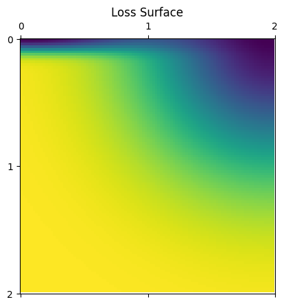

Sharpness-Aware Minimization (SAM)#

This serves a testing ground for a simple SAM type optimizer implementation in JAX with existing apis.
from typing import NamedTuple
import jax
import jax.numpy as np
import matplotlib.pyplot as plt
import optax
from optax import contrib
Transparent Mode#
This implementation of SAM can be used in two different modes: transparent and opaque.
Transparent mode exposes all gradient updates (described below) to the training loop, but it is easier to set up.
Opaque mode hides the adversarial updates from the training loop, which is necessary when other state depends on the updates, such as BatchNorm parameters.
Opaque mode is slightly more work to set up, so we will start with transparent mode.
One way to describe what SAM does is that it does some number of steps (usually 1) of adversarial updates, followed by an outer gradient update.
What this means is that we have to do a bunch of steps:
# adversarial step
params = params + sam_rho * normalize(gradient)
# outer update step
params = cache - learning_rate * gradient
cache = params
To actually use SAM then, you create your adversarial optimizer, here SGD with normalized gradients, an outer optimizer, and then wrap them with SAM.
The drop-in SAM optimizer described in the paper uses SGD for both optimizers.
lr = 0.01
rho = 0.1
opt = optax.sgd(lr)
adv_opt = optax.chain(contrib.normalize(), optax.sgd(rho))
sam_opt = contrib.sam(opt, adv_opt, sync_period=2) # This is the drop-in SAM optimizer.
sgd_opt = optax.sgd(lr) # Baseline SGD optimizer
However, it is possible to use SGD for the adversarial optimizer, and, for example, SGD with momentum for the outer optimizer.
def sam_mom(lr=1e-3, momentum=0.1, rho=0.1, sync_period=2):
opt = optax.sgd(lr, momentum=momentum)
adv_opt = optax.chain(contrib.normalize(), optax.sgd(rho))
return contrib.sam(opt, adv_opt, sync_period=sync_period)
mom = 0.9
sam_mom_opt = sam_mom(lr, momentum=mom)
mom_opt = optax.sgd(lr, momentum=mom)
It’s even possible to use Adam for both optimizers. In this case, we’ll need to increase the number of adversarial steps between syncs, but the resulting optimization will still be much faster than using SGD by itself with SAM.
def sam_adam(lr=1e-3, b1=0.9, b2=0.999, rho=0.03, sync_period=5):
"""A SAM optimizer using Adam for the outer optimizer."""
opt = optax.adam(lr, b1=b1, b2=b2)
adv_opt = optax.chain(contrib.normalize(), optax.adam(rho))
return contrib.sam(opt, adv_opt, sync_period=sync_period)
sam_adam_opt = sam_adam(lr)
adam_opt = optax.adam(lr)
We’ll set up a simple test problem below, we’re going to try to optimize a sum of two exponentials that has two minima, one at (0,0) and another at (2,0) and compare the performance of both SAM and ordinary SGD.
# An example 2D loss function. It has two minima at (0,0) and (2,0).
# Both points attain almost zero loss value, but the first one is much sharper.
def loss(params):
x, y = params
return -np.exp(-(x - 2)**2 - y**2) - 1.0*np.exp(-((x)**2 + (y)**2*100))
x, y = np.meshgrid(np.linspace(0, 2, 100), np.linspace(0, 2, 100))
l = loss((x, y))
plt.matshow(l)
plt.xticks([0, 50, 100], [0, 1, 2])
plt.yticks([0, 50, 100], [0, 1, 2])
plt.title('Loss Surface')
plt.show();

params = np.array([-0.4, -0.4])
class Store(NamedTuple):
params: jax.typing.ArrayLike
state: optax.OptState
step: int = 0
sam_store = Store(params=params, state=sam_opt.init(params))
sgd_store = Store(params=params, state=sgd_opt.init(params))
sam_mom_store = Store(params=params, state=sam_mom_opt.init(params))
mom_store = Store(params=params, state=mom_opt.init(params))
sam_adam_store = Store(params=params, state=sam_adam_opt.init(params))
adam_store = Store(params=params, state=adam_opt.init(params))
def make_step(opt):
@jax.jit
def step(store):
value, grads = jax.value_and_grad(loss)(store.params)
updates, state = opt.update(grads, store.state, store.params)
params = optax.apply_updates(store.params, updates)
return store.replace(
params=params,
state=state,
step=store.step+1), value
return step
sam_step = make_step(sam_opt)
sgd_step = make_step(sgd_opt)
sam_mom_step = make_step(sam_mom_opt)
mom_step = make_step(mom_opt)
sam_adam_step = make_step(sam_adam_opt)
adam_step = make_step(adam_opt)
sam_vals = []
sam_params = []
sgd_vals = []
sgd_params = []
sam_mom_vals = []
sam_mom_params = []
mom_vals = []
mom_params = []
sam_adam_vals = []
sam_adam_params = []
adam_vals = []
adam_params = []
T = 8000
for i in range(T):
sam_store, sam_val = sam_step(sam_store)
sgd_store, sgd_val = sgd_step(sgd_store)
sam_mom_store, sam_mom_val = sam_mom_step(sam_mom_store)
mom_store, mom_val = mom_step(mom_store)
sam_adam_store, sam_adam_val = sam_adam_step(sam_adam_store)
adam_store, adam_val = adam_step(adam_store)
sam_vals.append(sam_val)
sgd_vals.append(sgd_val)
sam_mom_vals.append(sam_mom_val)
mom_vals.append(mom_val)
sam_adam_vals.append(sam_adam_val)
adam_vals.append(adam_val)
sam_params.append(sam_store.params)
sgd_params.append(sgd_store.params)
sam_mom_params.append(sam_mom_store.params)
mom_params.append(mom_store.params)
sam_adam_params.append(sam_adam_store.params)
adam_params.append(adam_store.params)
---------------------------------------------------------------------------
AttributeError Traceback (most recent call last)
Cell In[10], line 3
1 T = 8000
2 for i in range(T):
----> 3 sam_store, sam_val = sam_step(sam_store)
4 sgd_store, sgd_val = sgd_step(sgd_store)
5 sam_mom_store, sam_mom_val = sam_mom_step(sam_mom_store)
6 mom_store, mom_val = mom_step(mom_store)
[... skipping hidden 5 frame]
Cell In[7], line 7, in make_step.<locals>.step(store)
3 def step(store):
4 value, grads = jax.value_and_grad(loss)(store.params)
5 updates, state = opt.update(grads, store.state, store.params)
6 params = optax.apply_updates(store.params, updates)
----> 7 return store.replace(
8 params=params,
9 state=state,
10 step=store.step+1), value
AttributeError: 'Store' object has no attribute 'replace'
ts = np.arange(T)
fig, axs = plt.subplots(6, figsize=(10, 12))
axs[0].plot(ts, sgd_vals, label='SGD')
axs[0].plot(ts[::2], sam_vals[0::2], label='SAM Outer Loss', lw=3, zorder=100)
axs[0].plot(ts[1::2], sam_vals[1::2], label='SAM Adv Loss', alpha=0.5)
axs[0].legend();
axs[1].plot(ts, sgd_vals, label='SGD')
axs[1].plot(ts[::2] / 2, sam_vals[::2], label='1/2 SAM', lw=3)
axs[1].legend();
axs[2].plot(ts, mom_vals, label='Mom')
axs[2].plot(ts[::2], sam_mom_vals[::2], label='SAM Mom Outer Loss', lw=3, zorder=100)
axs[2].plot(ts[1::2], sam_mom_vals[1::2], label='SAM Mom Adv Loss', alpha=0.5)
axs[2].legend();
axs[3].plot(ts, mom_vals, label='Mom')
axs[3].plot(ts[::2] / 2, sam_mom_vals[::2], label='1/2 SAM Mom', lw=3)
axs[3].legend();
axs[4].plot(ts, adam_vals, label='Adam')
axs[4].plot(ts[::5], sam_adam_vals[::5], label='SAM Adam Outer Loss', lw=3, zorder=100)
axs[4].plot(ts[4::5], sam_adam_vals[4::5], label='SAM Adam Adv Loss', alpha=0.5)
axs[4].legend();
axs[5].plot(ts, adam_vals, label='Adam')
axs[5].plot(ts[::5] / 5, sam_adam_vals[::5], label='1/5 SAM Adam', lw=3)
axs[5].legend();
On this problem, SAM Mom is the fastest of the three SAM optimizers in terms of real steps, but in terms of outer gradient steps, SAM Adam is slightly faster, since it has 4 inner gradient steps for every outer gradient step, compared with 1 inner per outer for SAM and SAM Mom.
fig, axs = plt.subplots(ncols=3, figsize=(8 * 3, 6))
axs[0].plot(*np.array(sgd_params).T, label='SGD')
axs[0].plot(*np.array(sam_params)[1::2].T, label='SAM Outer Steps', zorder=100)
axs[0].plot(*np.array(sam_params)[::2].T, label='SAM Adv Steps', alpha=0.5)
axs[0].legend(loc=4);
axs[1].plot(*np.array(mom_params).T, label='Mom')
axs[1].plot(*np.array(sam_mom_params)[1::2].T, label='SAM Mom Outer Steps', zorder=100)
axs[1].plot(*np.array(sam_mom_params)[::2].T, label='SAM Mom Adv Steps', alpha=0.5)
axs[1].legend(loc=4);
axs[2].plot(*np.array(adam_params).T, label='Adam')
axs[2].plot(*np.array(sam_adam_params)[4::5].T, label='SAM Adam Outer Steps', zorder=100)
axs[2].plot(*np.array(sam_adam_params)[3::5].T, label='SAM Adam Adv Steps', alpha=0.5)
axs[2].legend(loc=4);
As you can see, all three SAM optimizers find the smooth optimum, while all three standard optimizers get stuck in the sharp optimum.
SAM and SAM Mom follow fairly similar paths (although SAM Mom is much faster), but Sam Adam actually passes through the sharp optimum on the way to the smooth optimum.
The adversarial steps are quite different between the three SAM optimizers, demonstrating that the choice of both outer and inner optimizer have strong impacts on how the loss landscape gets explored.
Opaque Mode#
Here, we’ll demonstrate how to use opaque mode on the same setting.
The main difference is that we need to pass a gradient function to the update call. The gradient function needs to take as arguments params and an integer (indicating the current adversarial step). It’s generally safe to ignore the second argument:
grad_fn = jax.grad(
lambda params, _: loss(params, batch, and_other_args, to_loss))
updates, sam_state = sam_opt.update(updates, sam_state, params, grad_fn=grad_fn)
params = optax.apply_updates(params, updates)
Here’s the opaque drop-in SAM optimizer again.
lr = 0.01
rho = 0.1
opt = optax.sgd(lr)
adv_opt = optax.chain(contrib.normalize(), optax.sgd(rho))
sam_opt = contrib.sam(opt, adv_opt, sync_period=2, opaque_mode=True)
sgd_opt = optax.sgd(lr) # Baseline SGD optimizer
Here’s an opaque momentum SAM optimizer.
def sam_mom(lr=1e-3, momentum=0.1, rho=0.1, sync_period=2):
opt = optax.sgd(lr, momentum=momentum)
adv_opt = optax.chain(contrib.normalize(), optax.sgd(rho))
return contrib.sam(opt, adv_opt, sync_period=sync_period, opaque_mode=True)
mom = 0.9
sam_mom_opt = sam_mom(lr, momentum=mom)
mom_opt = optax.sgd(lr, momentum=mom)
Here’s an opaque Adam-based SAM optimizer.
def sam_adam(lr=1e-3, b1=0.9, b2=0.999, rho=0.03, sync_period=5):
"""A SAM optimizer using Adam for the outer optimizer."""
opt = optax.adam(lr, b1=b1, b2=b2)
adv_opt = optax.chain(contrib.normalize(), optax.adam(rho))
return contrib.sam(opt, adv_opt, sync_period=sync_period, opaque_mode=True)
sam_adam_opt = sam_adam(lr)
adam_opt = optax.adam(lr)
params = np.array([-0.4, -0.4])
class Store(NamedTuple):
params: jax.typing.ArrayLike
state: optax.OptState
step: int = 0
sam_store = Store(params=params, state=sam_opt.init(params))
sgd_store = Store(params=params, state=sgd_opt.init(params))
sam_mom_store = Store(params=params, state=sam_mom_opt.init(params))
mom_store = Store(params=params, state=mom_opt.init(params))
sam_adam_store = Store(params=params, state=sam_adam_opt.init(params))
adam_store = Store(params=params, state=adam_opt.init(params))
def make_step(opt):
@jax.jit
def step(store):
value, grads = jax.value_and_grad(loss)(store.params)
if isinstance(store.state, contrib.SAMState):
updates, state = opt.update(
grads, store.state, store.params,
grad_fn=jax.grad(lambda p, _: loss(p))) # NOTICE THE ADDITIONAL grad_fn ARGUMENT!
else:
updates, state = opt.update(grads, store.state, store.params)
params = optax.apply_updates(store.params, updates)
return store.replace(
params=params,
state=state,
step=store.step+1), value
return step
sam_step = make_step(sam_opt)
sgd_step = make_step(sgd_opt)
sam_mom_step = make_step(sam_mom_opt)
mom_step = make_step(mom_opt)
sam_adam_step = make_step(sam_adam_opt)
adam_step = make_step(adam_opt)
sam_vals = []
sam_params = []
sgd_vals = []
sgd_params = []
sam_mom_vals = []
sam_mom_params = []
mom_vals = []
mom_params = []
sam_adam_vals = []
sam_adam_params = []
adam_vals = []
adam_params = []
T = 4000
for i in range(T):
sam_store, sam_val = sam_step(sam_store)
sgd_store, sgd_val = sgd_step(sgd_store)
sam_mom_store, sam_mom_val = sam_mom_step(sam_mom_store)
mom_store, mom_val = mom_step(mom_store)
sam_adam_store, sam_adam_val = sam_adam_step(sam_adam_store)
adam_store, adam_val = adam_step(adam_store)
sam_vals.append(sam_val)
sgd_vals.append(sgd_val)
sam_mom_vals.append(sam_mom_val)
mom_vals.append(mom_val)
sam_adam_vals.append(sam_adam_val)
adam_vals.append(adam_val)
sam_params.append(sam_store.params)
sgd_params.append(sgd_store.params)
sam_mom_params.append(sam_mom_store.params)
mom_params.append(mom_store.params)
sam_adam_params.append(sam_adam_store.params)
adam_params.append(adam_store.params)
ts = np.arange(T)
fig, axs = plt.subplots(6, figsize=(10, 12))
axs[0].plot(ts, sgd_vals, label='SGD')
axs[0].plot(ts, sam_vals, label='SAM', lw=3, zorder=100)
axs[0].legend();
axs[1].plot(ts, sgd_vals, label='SGD')
axs[1].plot(ts * 2, sam_vals, label='2 * SAM', lw=3)
axs[1].legend();
axs[2].plot(ts, mom_vals, label='Mom')
axs[2].plot(ts, sam_mom_vals, label='SAM Mom', lw=3, zorder=100)
axs[2].legend();
axs[3].plot(ts, mom_vals, label='Mom')
axs[3].plot(ts * 2, sam_mom_vals, label='2 * SAM Mom', lw=3)
axs[3].legend();
axs[4].plot(ts, adam_vals, label='Adam')
axs[4].plot(ts, sam_adam_vals, label='SAM Adam', lw=3, zorder=100)
axs[4].legend();
axs[5].plot(ts, adam_vals, label='Adam')
axs[5].plot(ts * 5, sam_adam_vals, label='5 * SAM Adam', lw=3)
axs[5].legend();
The behavior is identical to transparent mode, but the perceived number of gradient steps is half as many as in transparent mode (or 1/5 as many for SAM Adam).
fig, axs = plt.subplots(ncols=3, figsize=(8 * 3, 6))
axs[0].plot(*np.array(sgd_params).T, label='SGD')
axs[0].plot(*np.array(sam_params).T, label='SAM', zorder=100)
axs[0].legend(loc=4);
axs[1].plot(*np.array(mom_params).T, label='Mom')
axs[1].plot(*np.array(sam_mom_params).T, label='SAM Mom')
axs[1].legend(loc=4);
axs[2].plot(*np.array(adam_params).T, label='Adam')
axs[2].plot(*np.array(sam_adam_params).T, label='SAM Adam')
axs[2].legend(loc=4);
The behavior is identical to transparent mode here as well, but we don’t get to see the adversarial updates.